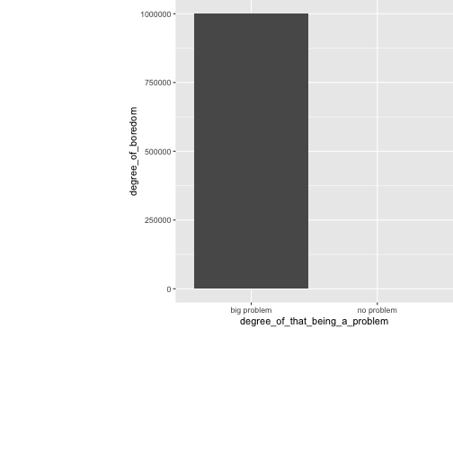

04 June 2017
Movie Predictor
Reproducible Pitch for the Developing Data Science Coursera Class
Reproducible Pitch for the Developing Data Science Coursera Class
Ever been so bored out of your mind that you had to resort to browsing youtube and 9gag and related pages for relief? Well, fear no more, thanks to modern machine learning technology, now there is now a better way to waste larger chuncks of time in a much more qualitative fashion!

My new movie prediction tool allows you to discover quality movies to watch, after rating just 10 movies that you have watched before, offering hours of sweet unproductive bliss with barely any search up-front time.
Just rate 10 movies and click "Run Prediction!" - and voila you get a whole list of ways to spend 2 hours happily lingering in front of your screen without so moving a finger.
This tool is based on a small share of the Netflix prize data. Based on the great guide by Edwin Chen I created the following features:
I trained a model on 200.000 Ratings of 149,473 users on 79 movies. Why not all 100,000,000+ Ratings on all 17,000+ movies? Because that would have taken half a year caluclation time.